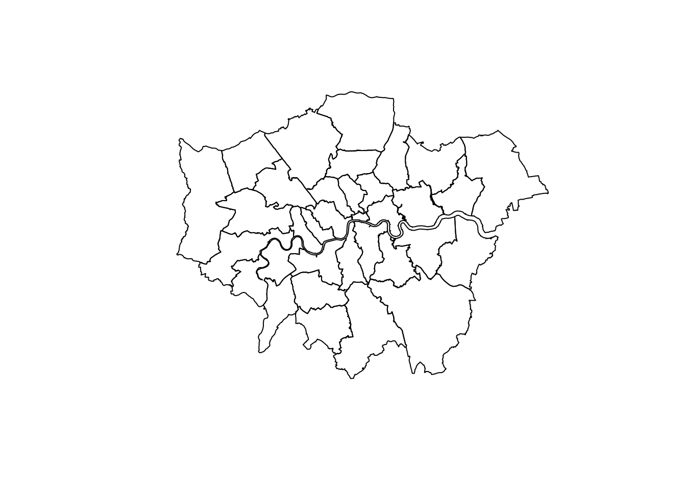

Section 4 Basic Settings
In this section, you will set the work path, import R packages, download the shape file & its folder and read datasets in RStudio.
4.1 Set the path of your project.
Before you do the research, you should set the default path. The path below is mine, you should set your own work path
setwd("/Users/fangzeqiang/Github/tutorial_bookdown/")4.2 Import the shape file
What you should keep in mind is that this shape file should be run in the complete ESRI dir because there are some dependent files that the shape file might use.
# you can download these files from github to your local work path that you set above
# github link: https://github.com/Hereislittlemushroom/CASA0005_Final_Assessment/tree/main/Dataset/statistical-gis-boundaries-london
London_Borough = st_read("dataset/statistical-gis-boundaries-london/ESRI/London_Borough_Excluding_MHW.shp")## Reading layer `London_Borough_Excluding_MHW' from data source `/Users/fangzeqiang/Github/tutorial_bookdown/dataset/statistical-gis-boundaries-london/ESRI/London_Borough_Excluding_MHW.shp' using driver `ESRI Shapefile'
## Simple feature collection with 33 features and 7 fields
## geometry type: MULTIPOLYGON
## dimension: XY
## bbox: xmin: 503568.2 ymin: 155850.8 xmax: 561957.5 ymax: 200933.9
## CRS: 27700# plot the map
plot(st_geometry(London_Borough))
4.3 Import the processed London national chargepoint register (NCR) dataset
The reason why choosing fread to read is because the read method is faster than the traditional ones. You can read .CSV file by df = fread("Dataset/London_NCR_GSS_Added.csv"). However, in the following codes, I recommend that you read the pre-processed dataset from my github link.
# df = fread("Dataset/London_NCR_GSS_Added.csv")
# df = fread(here::here("dataset","London_NCR_GSS_Added.csv"))
# df = fread("http://zeqiang.fun/_book/dataset/London_NCR_GSS_Added.csv")
df = fread("http://raw.githubusercontent.com/Hereislittlemushroom/CASA0005_Final_Assessment/main/Dataset/London_NCR_GSS_Added.csv")